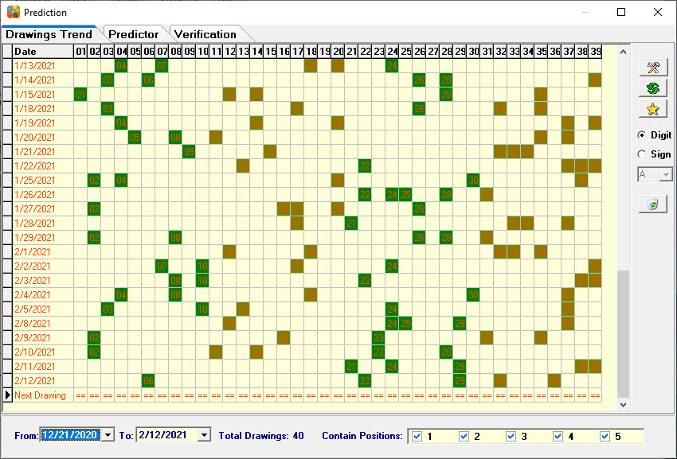
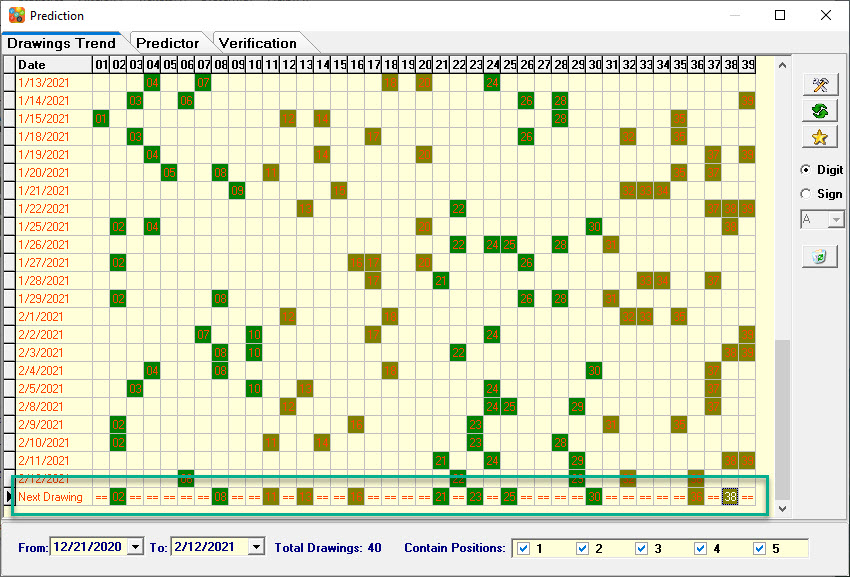
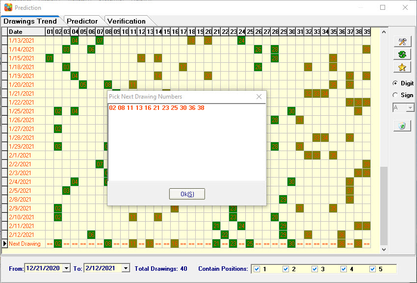

How to Use Drawings Trend |
Observation number charts, you will find there are certain rules, according to the number of movements manual predict next drawings. 
1. To manual predict next drawings: In the bottom of the table you can see Next Drawings, The left mouse button click on the "==" area show/hide numbers.


Home
Page: http://www.samlotto.com
Support:support@samlotto.com
Copyright: © SamLotto Lottery Software Team All rights reserved.